GUISADO
 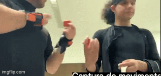
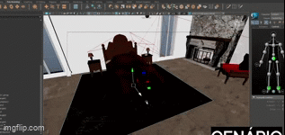
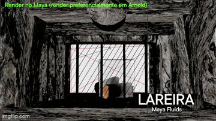
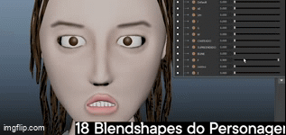
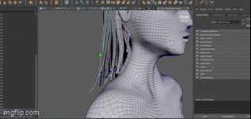
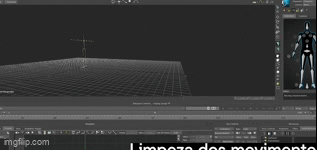
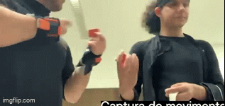
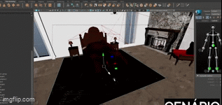
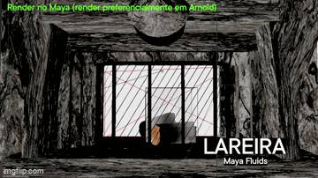
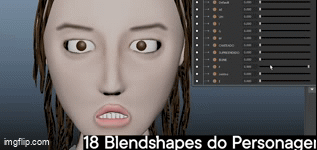
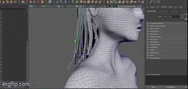
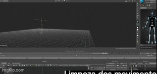
 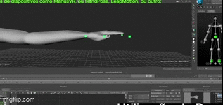
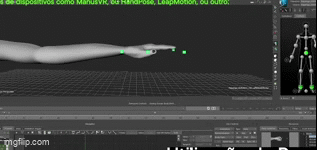
 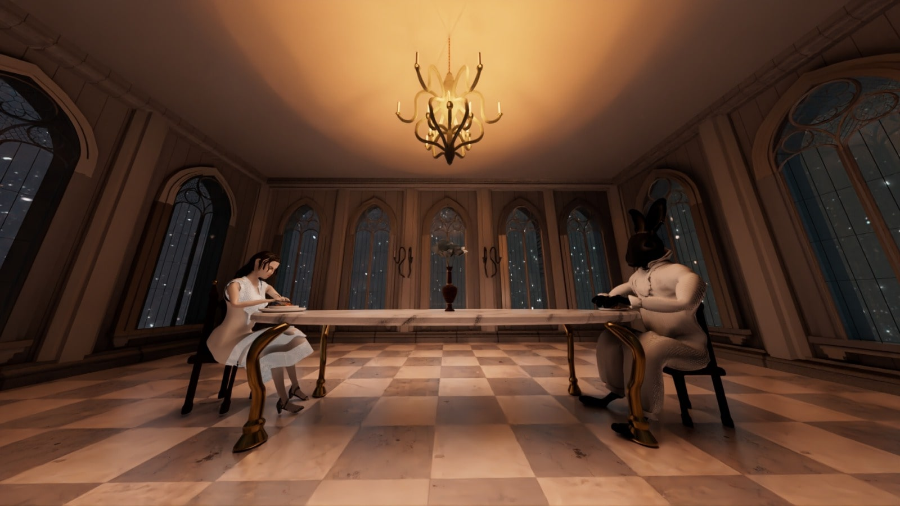
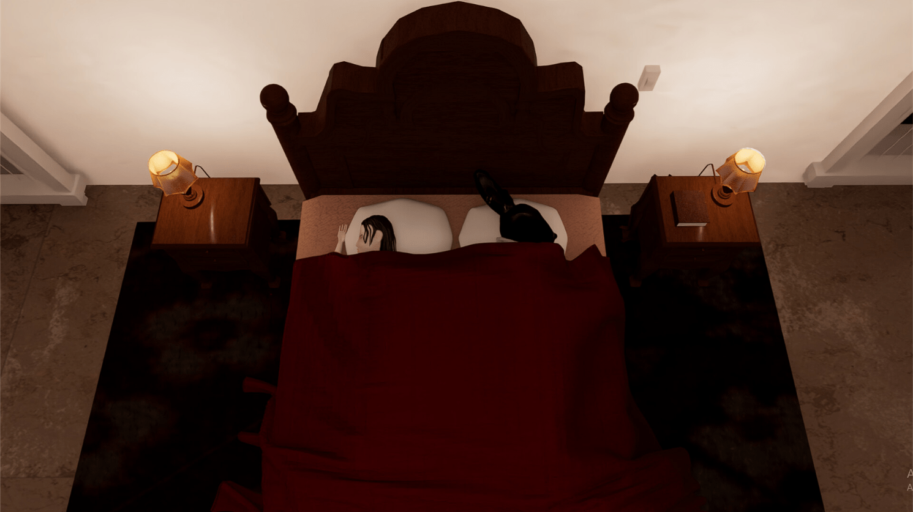
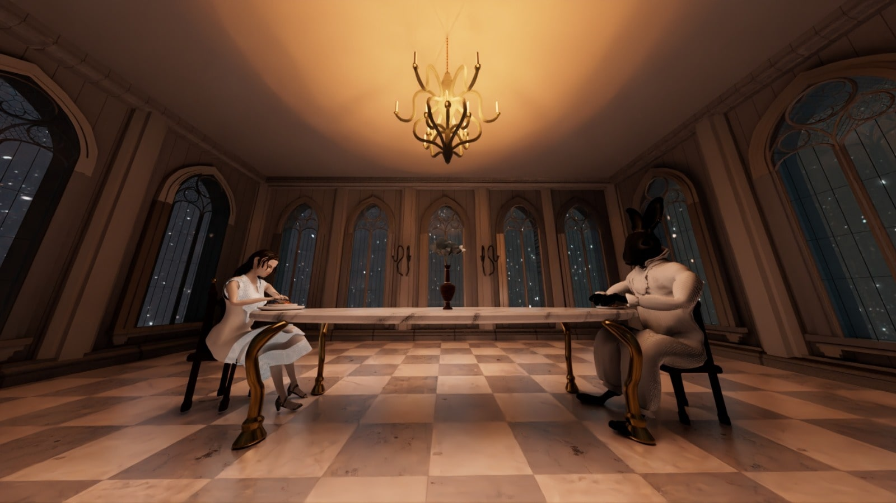
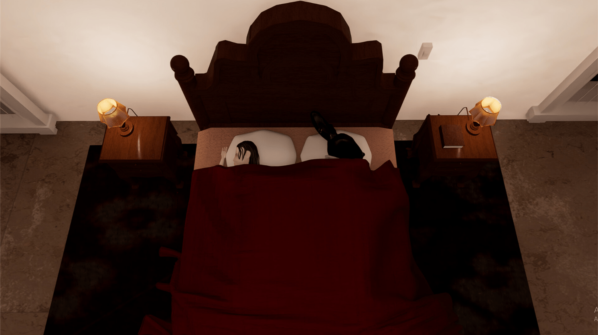
Project Overview
"GUISADO" is a 4-minute 3D animated short film exploring themes of loneliness, superficial relationships, and the illusion of happiness. Created as part of the Animation III curriculum at ESMAD, this atmospheric piece combines motion capture performance with stylized 3D animation to tell a surreal gothic tale.
Visual Style & Concept

The protagonist in her lonely dining hall

The anthropomorphic rabbit butlers
Drawing inspiration from Alice in Wonderland and the surreal pop art of Mark Ryden, the film features a distinctive gothic aesthetic with checkerboard floors, stained glass windows, and aristocratic furnishings. The visual contrast between the cold, expansive environments and the intimate moments of emotional turmoil creates a powerful tension throughout the narrative.
Technical Approach
Motion Capture
Utilized Xsens system for performance capture, with extensive cleanup and refinement in MotionBuilder to achieve nuanced character animation.
3D Environment
Created detailed gothic interiors with realistic lighting effects, including a custom fireplace simulation using Maya Fluid Effects.
Character Animation
Developed 18 blend shapes for facial animation and hair movement, enabling subtle emotional expressions during key scenes.
Post-Production
Enhanced atmosphere with added rain effects, steam from the stew, and careful color grading to unify all scenes tonally.
Key Scenes
The film's narrative unfolds in three acts: establishing the protagonist's loneliness, her impulsive attempt to solve it through marriage, and the revelation that her emotional void persists despite this superficial solution. Each act features carefully composed shots that emphasize the emotional distance between characters.
My Contributions
- Modeled and lit the bedroom environment, including fireplace effects
- Created the model, textures and visual concept behind the main character
- Developed the eating animation
- Created all scenes wich involved the girl
- Led post-production including color grading and visual effects
- Created the making-of documentary